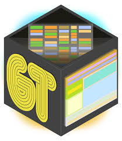

What I Use
Core R Packages
In R, several core packages provide essential tools for data manipulation, visualization, and analysis. These packages form the foundation of the R ecosystem, enabling efficient workflows and reproducible research.
The {dplyr} package in R provides a concise grammar of data manipulation, offering consistent verbs for common tasks. Key functions include select() to extract columns, filter() to subset rows, mutate() to create or modify variables, arrange() to sort rows, and summarize() with group_by() for grouped aggregations. Additionally, rename() simplifies column renaming. These tools streamline data transformation, making workflows efficient and readable for modern data analysis in R.

The {ggplot2} package in R is a powerful tool for data visualization, based on the grammar of graphics. It allows users to build plots layer by layer, starting with data and aesthetic mappings defined in ggplot(). Key layers include geom_ functions for adding geometric elements (e.g., geom_point() for scatterplots, geom_bar() for bar charts), facet_ functions for creating subplots, and theme() for customizing appearances. Its flexibility in mapping data to visual elements, combined with a rich set of options for customization, makes ggplot2 a cornerstone of exploratory and presentation-ready visualizations.

The {tidyr} package in R is designed for tidying data, ensuring it is in a consistent, tidy format where each variable is a column and each observation is a row. Key functions include pivot_longer() to convert wide data into long format, pivot_wider() for the reverse transformation, separate() to split a single column into multiple, and unite() to combine multiple columns into one. These functions enable efficient reshaping and restructuring of data, facilitating better data analysis and preparation for modeling or visualization tasks.

The {readr} package in R provides fast and efficient functions for reading and writing data. It simplifies importing data from various file formats, such as CSV, TSV, and fixed-width files, with functions like read_csv(), read_tsv(), and read_fwf(). These functions automatically handle common data issues such as type conversion and missing values. Additionally, readr provides write_csv() and write_tsv() for exporting data, ensuring compatibility with other tools while maintaining efficiency and consistency in data import/export tasks.

The {stringr} package in R provides a set of consistent and user-friendly functions for string manipulation. It simplifies common tasks such as detecting patterns with str_detect(), extracting substrings with str_extract(), and replacing text with str_replace(). Additionally, stringr offers functions like str_sub() for substring extraction, str_length() for string length, and str_c() for concatenating strings. These functions help streamline text processing, ensuring consistency and efficiency when working with string data.

The {forcats} package in R is designed for working with categorical data, specifically factors. It provides functions for reordering, recoding, and combining factor levels in a straightforward way. Key functions include fct_reorder() to reorder factor levels based on another variable, fct_lump() to combine infrequent levels, fct_recode() for renaming factor levels, and fct_drop() to remove unused levels. forcats helps manage and manipulate factors effectively, ensuring clean and meaningful categorical data for analysis and visualization.

The {easystats} package in R is a collection of tools designed to simplify the process of statistical analysis, reporting, and visualization. It provides a unified interface for working with various statistical models and outputs, making it easier to interpret and communicate results. Key functions include parameters() for extracting model parameters, performance() for assessing model fit, and effectsize() for calculating effect sizes. Additionally, easystats offers functions for model comparisons, diagnostics, and visualizations, streamlining the workflow for both beginners and advanced users in statistical analysis.

The {gtsummary} package in R is designed for creating publication-ready summary tables from statistical models and data. It allows users to easily summarize data, describe statistics, and present results in a clear, formatted table. Key functions include tbl_summary() for descriptive statistics of datasets, tbl_regression() for summarizing regression model results, and tbl_uvregression() for univariate regression analyses. The package supports customization of table styles, variable transformations, and statistical tests, making it a valuable tool for producing professional reports and visual summaries in clinical and social science research.

The {gt} package in R is used for creating beautiful, customizable tables for data presentation. It allows users to easily create tables from data frames or tibbles with functions like gt() to initiate the table and tab_spanner() for grouping columns. Users can apply various formatting options, such as color, bold, and font styles, to enhance the table’s readability using functions like tab_style() and tab_footnote(). gt also supports features like adding summary statistics, row/column grouping, and rendering tables in HTML or LaTeX for use in reports and publications.
Quarto is an open-source, next-generation publishing system that enables users to create dynamic documents, reports, presentations, and websites. It supports a wide range of formats, including HTML, PDF, Word, and slides, and integrates seamlessly with R, Python, Julia, and Observable. Quarto allows for literate programming, where code and narrative are combined in a single document. It supports advanced features like interactive visualizations, cross-referencing, and citation management, making it an ideal tool for academic and technical writing, data analysis, and reproducible research.
Literature Review
- typeset.io - Typeset.io is a platform designed to assist researchers, academics, and authors in the process of writing, formatting, and preparing documents for publication.
- scholarcy - The AI-powered article summarizer.
- elicit - AI-based research assistant.
Journal Finders
Journal Finder by Elsevier: This tool allows you to enter your manuscript title and abstract to find journals that are a good match for your research. It also provides information on journal metrics and submission guidelines.
Springer Journal Suggester: Springer’s tool helps you find the right journal for your research by analyzing your abstract or keywords and suggesting journals that publish articles in your field.
PubMed Journal Selector: If your research is in the biomedical or life sciences, PubMed’s Journal Selector can assist you in finding journals that match your keywords and research area.
JANE (Journal/Author Name Estimator): JANE is a free online tool that helps you find journals and authors based on the text of your article’s title and abstract.
JournalGuide: This tool provides a comprehensive database of journals in various fields and allows you to search for journals by keywords or browse by subject area.
Scopus Journal Finder: Scopus, a bibliographic database, offers a journal finder feature that helps you find journals related to your research area based on keywords or article titles.
DOAJ (Directory of Open Access Journals): If you’re interested in open-access journals, DOAJ is a directory of freely available scholarly journals that you can search by subject or keyword.
Scimago Journal & Country Rank: On the Scimago platform, you can find information about journals, their rankings, citation data, and more, which can be useful for researchers looking to identify suitable journals for their research or assess the impact and prestige of journals in their field. It’s a valuable tool for academic research and evaluation.
Data Wrangling
Data Visualization
- ggplot2 for the vast majority of the graphics, together with the hrbrtheme for styling.
- patchwork to put graphics together.
- ggraph and igraph for most of the network related graphics
- plotly and other html widgets for interactive graphics.
- RColorBrewer and viridis and colormap to control color in charts.
- Ggrepel and other ggplot2 extension that make your life simpler.
- Heatmaply for most of the heatmaps
Publication-ready Tables
Reproducible Research
- R Markdown to produce statistical reports.
- Quarto to build 95% of the website for my courses and others.
Statistical Modeling
- easystats for easy statistical modeling, visualization, and reporting
Data Science
- NumPy for scientific computing.
- Pandas for data wrangling and analysis
- Matplotlib for data visulization
- Seaborn for advance statistical visualizations
- Plotly for interative data visualization
- researchpy to summarize data and perform statistical tests.
- Dask for big data analysis
- scikit-learn for machine learning
- scikit-image for life science image manipulation
Data Resources
The Project Open Data Dashboard gives overview statistics of available government data from various agencies.
Guide to Open Data Publishing & Analytics - A good article describing best practices for publishing data openly. Is also a good read for those who want to analyze other’s data.
A short list of data related R packages - packages that either access data or include data
Some Data Sources
Kaggle Data - A growing number of datasets used in Kaggle data analysis contests and available for any other use.
Nasdaq Data Link - mainly finance related data
NHANES - longstanding and thorough survey done by CDC
SEER - Cancer data
CDC WONDER - list of mainly CDC online databases
Healthy People Website - contains among other things links to various data sources
HCUP - collection of health related databases, focusing on US wide and state-specific samples of ER and hospital visits. Not free, but not too expensive.
Clinical Study Data Request - a way to get (tedious) access to clinical trial data
EMA Clinical Data Portal - looks like a way to get access to some clinical trial data for EMA registered studies.
MIMIC - a free and open database of critical care patient visits to a Boston hospital.
Data.gov - federak government data platform.
Analyze Survey Data for Free - Step by Step Instructions to Explore Public Microdata from an Easy to Type Website
Inter-university Consortium for Political and Social Research (ICPSR) - access to various social and behavioral sciences data.
A list hosted by Microsoft with links to various data sources
Infectious Disease Specific
General
- Project Tycho - infectious disease data
- http://www.viprbrc.org
- http://eupathdb.org
- ClinEpiDB - a database of (a few) clinical epidemiology studies, focusing on infectious diseases.
- ImmPort
Influenza
- http://www.fludb.org
- <gisaid.org>
- http://www.cdc.gov/flu/index.htm
- http://www.ncbi.nlm.nih.gov/genomes/FLU/FLU.html
- http://www.SystemsInfluenza.org
TB
- OTIS on CDC WONDER: http://wonder.cdc.gov/tb.html
Cancer Bioinformatics
Data Sources
The Cancer Genome Atlas (TCGA): TCGA is a comprehensive collection of multi-dimensional cancer genomics data covering multiple cancer types.
International Cancer Genome Consortium (ICGC): Description: ICGC provides high-quality genomic and clinical data from various cancer projects worldwide.
Gene Expression Omnibus (GEO): GEO is a public repository hosted by the National Center for Biotechnology Information (NCBI) containing a vast collection of gene expression data, including cancer datasets.
European Genome-phenome Archive (EGA): Description: EGA is a repository for secure storage and sharing of human genetic and phenotypic data, including cancer datasets.
National Cancer Institute (NCI) Genomic Data Commons (GDC): Description: GDC is an open-access data portal providing access to a wide range of cancer genomics datasets.
cellxgene.cziscience.com - Download and visually explore reference-quality data to understand the functionality of human tissues at the cellular level with Chan Zuckerberg CELL by GENE Discover (CZ CELLxGENE Discover).
10XGenomics - High-performance in situ from the single cell leader
Analysis Tools
UCSC Xena: An online exploration tool for public and private, multi-omic and clinical/phenotype data
GEO2R: GEO2R is an interactive web tool that allows users to compare two or more groups of Samples in a GEO Series in order to identify genes that are differentially expressed across experimental conditions. Results are presented as a table of genes ordered by P-value, and as a collection of graphic plots to help visualize differentially expressed genes and assess data set quality. GEO2R uses a variety of R packages from the Bioconductor project. Bioconductor is an open-source software project based on the R programming language that provides tools for the analysis of high-throughput genomic data.
GEPIA2: GEPIA2 is a web-based tool for analyzing gene expression data in cancer. It stands for Gene Expression Profiling Interactive Analysis 2 and is an updated version of the original GEPIA tool. GEPIA2 allows users to explore gene expression patterns, perform survival analyses, and visualize gene expression data across various cancer types.
TIMER2.0: TIMER is a comprehensive resource for systematical analysis of immune infiltrates across diverse cancer types. This version of webserver provides immune infiltrates’ abundances estimated by multiple immune deconvolution methods, and allows users to generate high-quality figures dynamically to explore tumor immunological, clinical and genomic features comprehensively.
UALCAN: UALCAN is a web-based platform that provides interactive and comprehensive analysis of cancer transcriptome data. It enables users to explore gene expression patterns, perform survival analyses, and compare gene expression between tumor and normal samples across different cancer types. UALCAN utilizes data from The Cancer Genome Atlas (TCGA) to facilitate cancer research and provide insights into tumor biology.
cBioPortal for Cancer Genomics:: cBioPortal hosts a large collection of cancer genomics datasets, allowing users to explore and visualize the data.
GREIN : GEO RNA-seq Experiments Interactive Navigator: GREIN is an interactive web platform that provides user-friendly options to explore and analyze GEO RNA-seq data. GREIN is powered by the back-end computational pipeline for uniform processing of RNA-seq data and the large number (>6,000) of already processed datasets. These datasets were retrieved from GEO and reprocessed consistently by the back-end GEO RNA-seq experiments processing pipeline (GREP2).
OncoLnc: Description: OncoLnc is a web resource that provides survival analysis and expression correlation for genes of interest across multiple cancer datasets.
UCSC Cancer Genomics Browser: The UCSC Cancer Genomics Browser offers a comprehensive collection of cancer genomics data integrated with genomic annotations.
ONCOMINE: ONCOMINE is a powerful web-based platform for the analysis and visualization of cancer transcriptomic data. It provides researchers with access to a vast collection of publicly available gene expression datasets derived from cancer studies. ONCOMINE allows users to explore gene expression patterns, identify potential biomarkers, and compare gene expression between different cancer types or subtypes.
R Packages
TCGAbiolinks: An R/Bioconductor package for integrative analysis with GDC data. TCGAbiolinks is able to access The National Cancer Institute (NCI) Genomic Data Commons (GDC) thorough its GDC Application Programming Interface (API) to search, download and prepare relevant data for analysis in R.
maftools: Summarize, Analyze and Visualize MAF Files. This package attempts to summarize, analyze, annotate and visualize MAF files in an efficient manner from either TCGA sources or any in-house studies as long as the data is in MAF format.
SummarizedExperiment: The SummarizedExperiment container contains one or more assays, each represented by a matrix-like object of numeric or other mode. The rows typically represent genomic ranges of interest and the columns represent samples.
MutationalPatterns: Comprehensive genome-wide analysis of mutational processes. he package covers a wide range of patterns including: mutational signatures, transcriptional and replicative strand bias, lesion segregation, genomic distribution and association with genomic features, which are collectively meaningful for studying the activity of mutational processes.
GenVisR: Short for “Genomic Visualizations in R,” this tool provides visualization capabilities tailored to a variety of genomic data types, including data common in cancer research such as somatic mutations, copy number variations, and more.
Teaching Tools
- Bioicons - a collection of free drawings and diagrams on biological topics, which can be used in teaching (or research) presentations.
- learnr - R package that allows development of interactive web-based R tutorials.
- Feedback at scale - tutorial for using learnr and gradethis as teaching tools.
- Teaching Statistics and Data Science Online - materials for several teacher workshops taught by Mine Çetinkaya-Rundel.